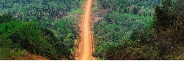
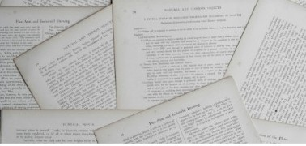

Evidence Science
PhD-level academic rigor applied to public policy and spatial planning
PhD-level academic rigor applied to public policy and spatial planning
Research and professional writing in English, French, and Fon
Knowledge translation converting complex findings into accessible series
Targeted consulting for social impact, policy briefs, and legal texts
About the platform
Connecting theoretical human geography and empirical urban politics with real-world governance, environmental education, and community dignity.
People and Places was established by Emmanuel Awohouedji, PhD, as an independent urban research, writing, and consulting platform. Operating with paper-tone restraint and quiet intellect, the platform addresses critical urban and environmental challenges across diverse territories.
By translating academic studies into policy documentation, urban plans, and public-facing short series, People and Places bridges the gap between scholarly inquiry and actionable social impact.
Analyzing lived experiences, spatial rights, floating habitats, and urban communities across changing landscapes.
Evaluating legal texts, policy frameworks, governmental structures, and public space equity.
Examining climate adaptation, waste management, infrastructure impact, and environmental education.

